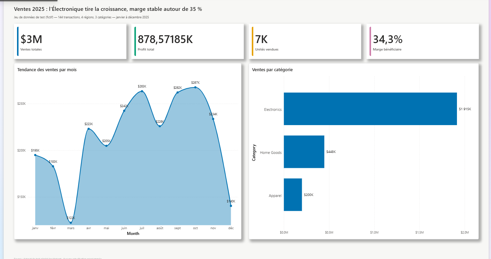
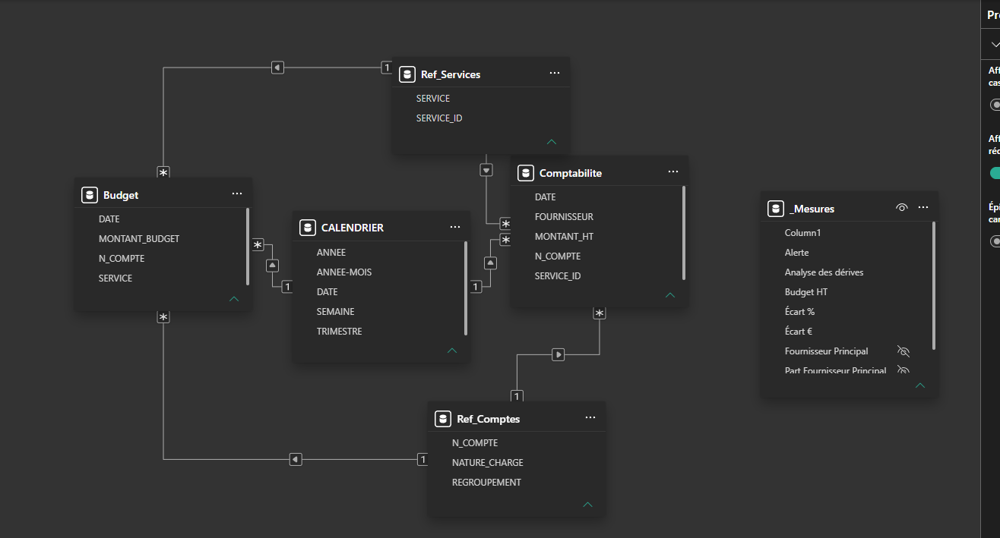
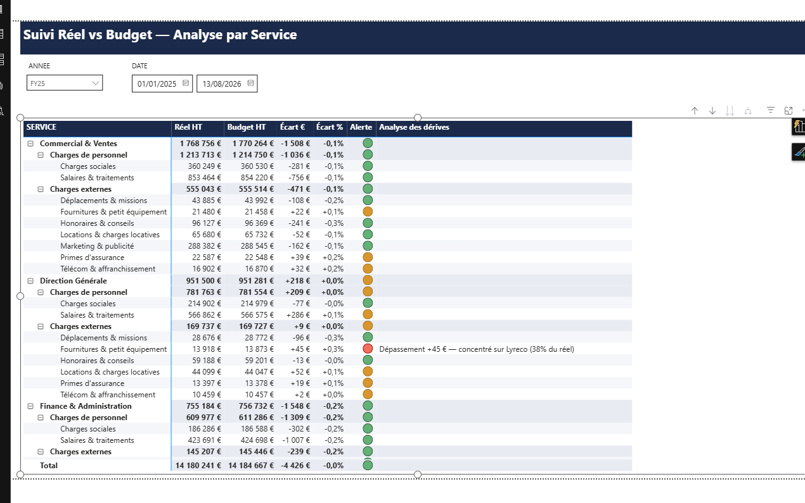

L'idée du projet
Jusqu'où une IA agentique peut-elle construire seule un vrai rapport Power BI — modèle, mise en page, thème — et vérifier elle-même le rendu dans Power BI Desktop ?
J'ai piloté Claude (via Claude Code) en gardant le rôle de superviseur : je donne le brief et je débloque les actions manuelles ; l'agent fait le reste. En deux temps : un dashboard de test pour roder l'outillage, puis un vrai projet reproduisant un exercice de formation.
Un dashboard de test
Jeu de données fictif (144 transactions). Le vrai objectif : découvrir la chaîne d'outils et faire écrire à Claude un guide de ses propres erreurs.
Suivi Réel vs Budget
Reproduire une matrice de pilotage budgétaire : Réel vs Budget par service, jusqu'à la nature de charge, avec alerte colorée et commentaire automatique des dépassements. Données générées en Python.

La stack
Le principe : ne jamais deviner le format des fichiers Power BI, mais s'appuyer sur l'outillage officiel Microsoft (les skills skills-for-fabric) pour cadrer l'agent, en y branchant le MCP adapté à la couche visée.
| Outil | Rôle |
|---|---|
| Skills officielles Microsoft — skills-for-fabric (MIT) | |
| powerbi-report-authoring | Écrire/éditer le rapport PBIR (pages, visuels, thème) + boucle valider → recharger → capturer. Skill centrale du projet. |
| powerbi-report-design | Thème, style visuel, layout, critique de rendu. |
| powerbi-report-planning | Transformer un besoin en spécification de rapport. |
| powerbi-report-management | Gérer les rapports côté Fabric (workspace). |
| semantic-model-authoring | Construire le modèle : tables, relations, mesures DAX, TMDL. |
| semantic-model-consumption | Interroger un modèle existant (requêtes DAX). |
| CLI officielles Microsoft | |
| powerbi-report-authoring-cli | Valider le PBIR, connaître les propriétés exactes des visuels. |
| powerbi-desktop-bridge-cli | Piloter Power BI Desktop : ouvrir, recharger, capturer le rendu réel. |
| MCP — serveurs d'outils actionnables par l'agent | |
| powerbi-modeling-mcp officiel · Microsoft | Modèle sémantique (tables, relations, mesures DAX). Ne touche pas au rapport. |
| powerbi-report-builder communautaire | ~30 outils pbir_* pour construire le rapport — la couche que le MCP officiel ne couvre pas. |
| Reste de la stack | |
| Power BI Desktop | Installé via winget, piloté par le Desktop Bridge pour vérifier le rendu réel. |
| Python | pandas / openpyxl pour générer les jeux de données fictifs. |
| Formats | PBIP (dossier versionnable), PBIR, TMDL, DAX, Power Query M. |
Le vrai projet : Suivi Réel vs Budget
Toutes les sources sont générées en Python : 9 services, 13 natures de charge, ~3 800 écritures sur 17 mois, avec un fournisseur volontairement mis en pic certains mois pour faire « vivre » la colonne de commentaire.
Le modèle est un flocon : deux tables de faits (Comptabilite au jour, Budget au mois) partagent trois dimensions. Le calendrier n'est pas importé mais calculé en DAX (CALENDARAUTO()).

Le cœur du projet : une mesure DAX qui ne s'affiche qu'au niveau le plus fin et au-delà d'un seuil de dépassement, en pointant le fournisseur responsable.
Analyse des dérives = VAR EstAuNiveauNature = ISINSCOPE(Ref_Comptes[NATURE_CHARGE]) VAR Ecart = [Écart %] RETURN IF( EstAuNiveauNature && NOT ISBLANK(Ecart) && Ecart > 0.002, "Dépassement " & FORMAT([Écart €], "+#,##0;-#,##0") & " € — concentré sur " & [Fournisseur Principal] & " (" & FORMAT([Part Fournisseur Principal], "0%") & " du réel)" )

Le point qui a vraiment coûté du temps : le thème
Les 4 cartes KPI restaient vides (cadre visible, mais ni chiffre ni libellé) — sans aucune erreur de validation. La cause : le fichier theme.json contenait un sélecteur "$id": "default", valide dans un fichier de visuel mais pas dans un fichier de thème. Power BI ignore la clé en silence et casse l'affichage du texte, et le validateur officiel ne le détecte pas.
La leçon (écrite dans le guide) : jamais de sélecteur dans un fichier de thème, et pour un premier jet, préférer le thème officiel « Copilot » plutôt que d'en fabriquer un à la main.
Ce que j'en retiens
- Une IA agentique peut produire un livrable Power BI réel et se vérifier elle-même en pilotant Desktop — à condition d'être supervisée.
- Le plus gros risque n'est pas le code mais les différences subtiles de format (thème vs visuel, M vs DAX) qu'aucun validateur ne signale.
- Faire écrire à l'agent un guide de ses propres erreurs transforme un projet raté-puis-réussi en capital réutilisable pour la session suivante.